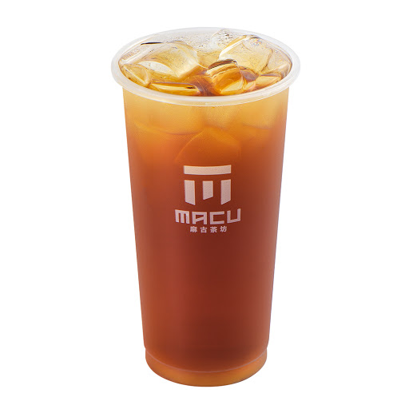
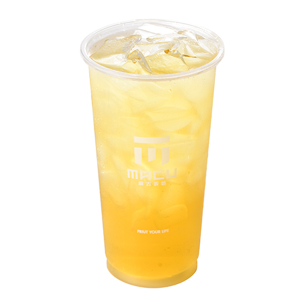

| 產品介紹 | |||
| 茶類 | 圖片 | 價錢 | 口感 |
|---|---|---|---|
| 冬瓜茶 |  | 10元 | 用冬瓜和糖長時間熬煮的冬瓜茶有一種特別的甘、醇和香甜，是許多人記憶裡非常懷念的味道。 冬瓜茶在台灣已經有超過百年的歷史，與甘蔗汁、青草茶並列為三大冰飲。 剛煮好的冬瓜糖水香氣四溢，冰鎮過的滋味喝起來更加甘甜，它不僅具有草根性，也是快速演進的台灣社會裡，唯一不變的家鄉味。 |
| 金萱茶 |  | 10元 | 以金萱茶葉製作的茶品，帶有淡淡奶香。 綜合阿里山山頭獨特的山韻，阿里山金萱茶口感圓潤、質地香醇、入口回甘、淡淡清香與奶香，使它備受女性及年輕族群消費者喜愛，非常適合烏龍茶入門的基本款。 |
| 錫蘭紅茶 | 10元 | 滋味強烈的紅茶，富含茶黃質、茶多酚的紅茶猶如葡萄酒般地強烈質地。 不同品種呈現滋味也有所不同，香氣以花果香為主，有些會有特殊品種香。 | |
| 高山茶 | 10元 | 一般來說，高山茶的風味溫潤甘甜、不苦澀，因此成為許多人的心頭好。 許偉庭指出，由於高山氣候冷涼，早晚雲霧籠罩、平均日照短，高山茶的茶胺酸較高，但茶樹芽葉中具刺激性的抗氧化物（如兒茶素類）較少，才造就了口感的溫和甘甜不苦澀。 | |
| 鐵觀音奶茶 | 10元 | 茶葉產地來自台灣，屬於半發酵茶，使用鐵觀音的慢火烘焙製成，茶香與焙火香混合形成的香氣成分種類豐富，有一種特殊的韻味口齒留香！ | |
| 文山青茶 | 10元 | 文山包種茶喝起來最清新入喉，由其是坪林地區所產的文山包種茶「香、濃、醇、韻、美」，長久以來一直是品茗者的最愛，香味清香撲鼻，茶味甘甜、喉韻十足，入口醇郁濃厚，落喉甘潤圓滑帶活性，茶菁均採「青心烏龍」品種，所製成的茶葉外觀翠綠帶麗色，條索緊結自然彎曲，沖泡後茶湯水色蜜綠鮮豔悅目，滋味甘潤。 | |
| 四季春茶 | 10元 | 四季春茶由於萌芽早，亦稱為「不知春」。 採選春冬二季茶青原料製作，茶香明顯獨具幽雅花香，茶湯滋味純和清快不苦澀，刺激性低。 其特色香氣清逸、滋味醇厚，做法逐漸走低發酵，不僅有烏龍茶韻味，又有綠茶香氣，適合四季飲用，故稱之為四季春茶。 | |
| 烏龍綠茶 | 10元 | 烏龍綠茶茶湯呈現明淨澄澈的黃褐色，入口滑順潤澤，具有多層次的豐富口感，剛入口時清香淡雅，之後轉為甘醇豐厚，並帶出喉舌間濃郁、悠長的回甘尾韻，更有淡淡的炭燒香味迴盪其間。 | |
| 梅子綠茶 | 10元 | 沁涼酸甜，消暑又清爽！暑假過了一大半了，雖然已經立秋，還是稍微有點暑氣呢！炎熱的下午來一杯梅子綠茶，清爽一下吧！綠茶的茉莉香味，搭配好趣覓脆梅，清爽的酸甜口感，是夏天最好的享受！ | |
| 檸檬紅茶 | 10元 | 檸檬紅茶的作法是將檸檬切成圓片放入紅茶中，享受其香氣和微酸的口感。 但檸檬皮會釋放出極苦的檸檬油，與紅茶的澀味成分兒茶素結合後會使得茶喝起來變得更苦、更澀。 | |